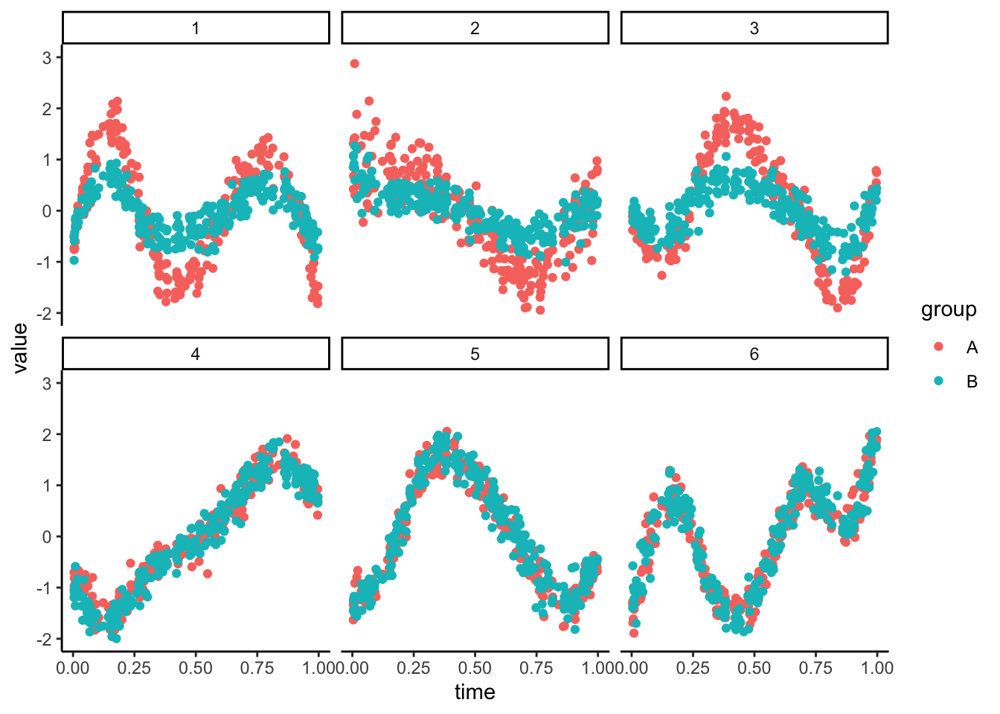

1.3 Warm-up: A Gaussian Example
Here’s a toy dataset to illustrate the main idea of GAMLSS. Each panel in the plot below represents a different feature (e.g., taxon, gene, metabolite…). The abundance varies smoothly over time, and in the first three panels, the trends differ by group assignment.
## Warning: Removed 12 rows containing missing values or values outside the scale range (`geom_point()`).
We can try to approximate these data with a new simulator. The setup_simulator
command takes the template SummarizedExperiment object as its first argument.
The second gives an R formula syntax-style specification of GAMLSS parameters
(mean and SD, in this case) dependence on sample properties. The last argument
gives the type of model to fit, in this case, a Gaussian location-shape-scale
model.
sim <- setup_simulator(exper_ts, ~ ns(time, df = 7) * group, ~ GaussianLSS()) |>
estimate(nu = 0.01, mstop = 1000)
sample(sim) |>
exper_lineplot()## Warning: Removed 1 row containing missing values or values outside the scale range (`geom_point()`).
Exercise: Right now, each panel allows for an interaction between the trend and group type. Can you define a simulator where the groups have no effect on the trends for the first two panels? This is the basis for defining synthetic negative controls.
sim <- sim |>
scDesigner::mutate(
1:2,
link = ~ ns(time, df = 7)
) |>
estimate(nu = 0.01, mstop = 1000)
sample(sim) |>
exper_lineplot()Solution: We can modify the formula so that it no longer has an interaction
with group. We just need to remove the * group from the original formula in our updated
link function. To ensure that this only applies to the first two panels, we use
1:2 in the first argument of mutate. This first argument specifies which
features to apply the new formula to.
sim <- sim |>
mutate(1:2, link = ~ ns(time, df = 7)) |>
estimate(nu = 0.01, mstop = 1000)
sample(sim) |>
exper_lineplot()## Warning: Removed 4 rows containing missing values or values outside the scale range (`geom_point()`).
## R version 4.4.1 Patched (2024-08-21 r87049)
## Platform: aarch64-apple-darwin20
## Running under: macOS Sonoma 14.5
##
## Matrix products: default
## BLAS: /Library/Frameworks/R.framework/Versions/4.4-arm64/Resources/lib/libRblas.0.dylib
## LAPACK: /Library/Frameworks/R.framework/Versions/4.4-arm64/Resources/lib/libRlapack.dylib; LAPACK version 3.12.0
##
## locale:
## [1] en_US.UTF-8/en_US.UTF-8/en_US.UTF-8/C/en_US.UTF-8/en_US.UTF-8
##
## time zone: America/Chicago
## tzcode source: internal
##
## attached base packages:
## [1] splines parallel stats4 stats graphics grDevices utils datasets methods base
##
## other attached packages:
## [1] TreeSummarizedExperiment_2.13.0 Biostrings_2.73.1 XVector_0.45.0 SingleCellExperiment_1.27.2 scDesigner_0.0.0.9000 purrr_1.0.2
## [7] MIGsim_0.0.0.9000 tidyr_1.3.1 tibble_3.2.1 scico_1.5.0 pwr_1.3-0 patchwork_1.2.0
## [13] mutoss_0.1-13 mvtnorm_1.3-1 mixOmics_6.29.0 lattice_0.22-6 MASS_7.3-61 glue_1.7.0
## [19] ggplot2_3.5.1 ggdist_3.3.2 gamboostLSS_2.0-7 mboost_2.9-11 stabs_0.6-4 forcats_1.0.0
## [25] dplyr_1.1.4 SummarizedExperiment_1.35.1 Biobase_2.65.1 GenomicRanges_1.57.1 GenomeInfoDb_1.41.1 IRanges_2.39.2
## [31] S4Vectors_0.43.2 BiocGenerics_0.51.1 MatrixGenerics_1.17.0 matrixStats_1.4.0 SpiecEasi_1.1.3 CovTools_0.5.4
##
## loaded via a namespace (and not attached):
## [1] minpack.lm_1.2-4 rpart_4.1.23 lifecycle_1.0.4 Rdpack_2.6.1 edgeR_4.3.14 doParallel_1.0.17 insight_0.20.4 magrittr_2.0.3
## [9] limma_3.61.9 sass_0.4.9 rmarkdown_2.28 jquerylib_0.1.4 yaml_2.3.10 plotrix_3.8-4 RColorBrewer_1.1-3 ADGofTest_0.3
## [17] multcomp_1.4-26 abind_1.4-5 zlibbioc_1.51.1 expm_1.0-0 quadprog_1.5-8 pspline_1.0-20 kde1d_1.0.7 yulab.utils_0.1.7
## [25] rgl_1.3.1 pracma_2.4.4 TH.data_1.1-2 sandwich_3.1-0 GenomeInfoDbData_1.2.12 ggrepel_0.9.5 tidytree_0.4.6 ellipse_0.5.0
## [33] RSpectra_0.16-2 codetools_0.2-20 DelayedArray_0.31.11 shapes_1.2.7 tidyselect_1.2.1 shape_1.4.6.1 farver_2.1.2 UCSC.utils_1.1.0
## [41] randtoolbox_2.0.4 base64enc_0.1-3 jsonlite_1.8.8 multtest_2.61.0 Formula_1.2-5 survival_3.7-0 iterators_1.0.14 foreach_1.5.2
## [49] tools_4.4.1 progress_1.2.3 treeio_1.29.1 Rcpp_1.0.13 rARPACK_0.11-0 gridExtra_2.3 Rttf2pt1_1.3.12 SparseArray_1.5.31
## [57] xfun_0.47 distributional_0.4.0 withr_3.0.1 numDeriv_2016.8-1.1 fastmap_1.2.0 fansi_1.0.6 digest_0.6.37 R6_2.5.1
## [65] colorspace_2.1-1 inum_1.0-5 copula_1.1-4 flare_1.7.0.1 utf8_1.2.4 generics_0.1.3 corpcor_1.6.10 prettyunits_1.2.0
## [73] pulsar_0.3.11 httr_1.4.7 htmlwidgets_1.6.4 S4Arrays_1.5.7 scatterplot3d_0.3-44 rngWELL_0.10-9 pkgconfig_2.0.3 geigen_2.3
## [81] gtable_0.3.5 pcaPP_2.0-5 htmltools_0.5.8.1 bookdown_0.40 scales_1.3.0 SHT_0.1.8 knitr_1.48 rstudioapi_0.16.0
## [89] reshape2_1.4.4 nlme_3.1-166 cachem_1.1.0 zoo_1.8-12 stringr_1.5.1 libcoin_1.0-10 extrafont_0.19 pillar_1.9.0
## [97] grid_4.4.1 vctrs_0.6.5 VGAM_1.1-11 huge_1.3.5 extrafontdb_1.0 gamlss.dist_6.1-1 evaluate_0.24.0 cli_3.6.3
## [105] locfit_1.5-9.10 compiler_4.4.1 rlang_1.1.4 crayon_1.5.3 labeling_0.4.3 fs_1.6.4 plyr_1.8.9 stringi_1.8.4
## [113] BiocParallel_1.39.0 nnls_1.5 assertthat_0.2.1 rvinecopulib_0.6.3.1.1 munsell_0.5.1 gsl_2.1-8 lazyeval_0.2.2 glmnet_4.1-8
## [121] Matrix_1.7-0 hms_1.1.3 stabledist_0.7-2 statmod_1.5.0 highr_0.11 rbibutils_2.2.16 partykit_1.2-22 igraph_2.0.3
## [129] bslib_0.8.0 ape_5.8